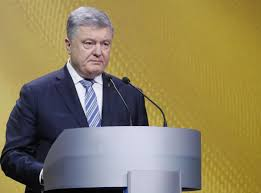

Кандидат у Президенти України Петро Порошенко

підтримка :15.95%
Петро́ Олексі́йович Пороше́нко (нар. 26 вересня 1965) —
український політик, підприємець, п'ятий президент України (з 2014).
Народився у Болграді, УРСР. Випускник Київського інституту міжнародних відносин.
Кандидат юридичних наук (2002, Одеська юридична академія).
Народний депутат України 2, 4, 5 та 6 скликань (1998—2014).
Працював міністром закордонних справ (2009—2010) і торгівлі (2012).
Був членом Ради Національного банку України (2007—2014).
За президентства зупинив російську агресію на сході України, добився зовнішньополітичної
підтримки України державами Заходу. Отримав безвізовий режим з Європейським Союзом (2017).
Сприяв наданню автокефалії Українській православній церкві (2018—2019).
Ініціював реформи в армії, освіті, медицині, сферах державного управління тощо.
Після Чорноморського інциденту тимчасово запровадив воєнний стан (2018).
Власник кондитерської корпорації «Рошен», кількох автомобільних і автобусних заводів,
інформаційного П'ятого каналу тощо. Один із найбагатших людей країни.
Лауреат Премії України в галузі науки і техніки, заслужений економіст України.